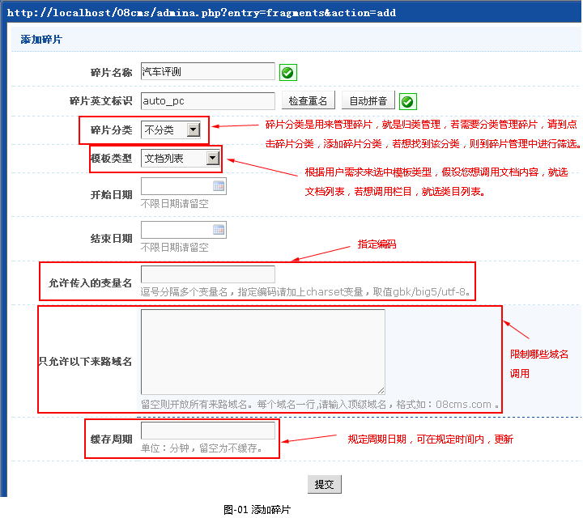
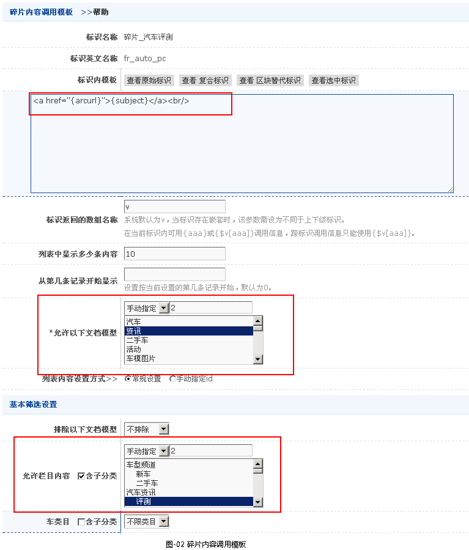
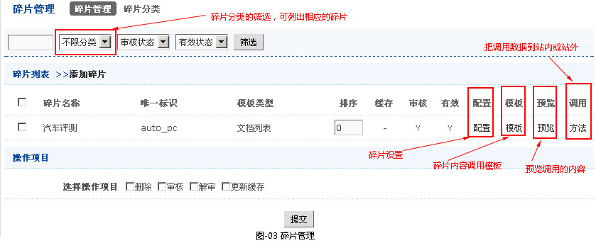
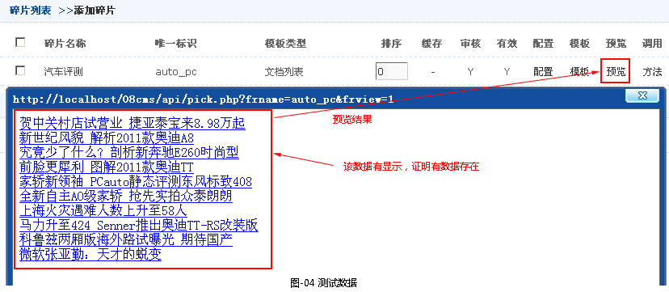
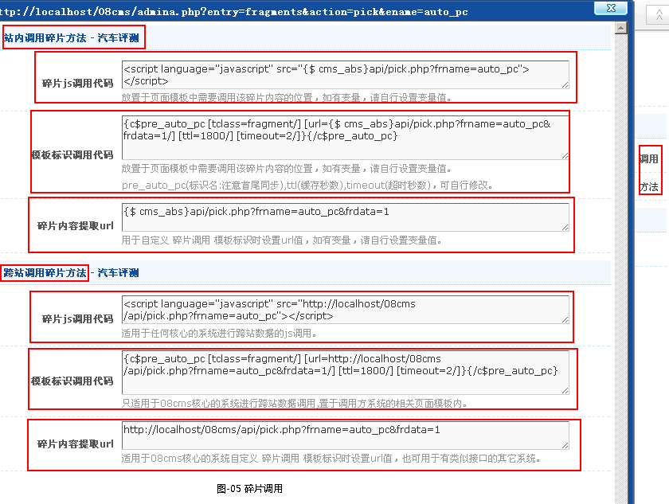

碎片调用
一、前言
碎片调用是主要用来调用本站的内容到站外（可跨域）显示，当然也可以站内调用。
二、碎片调用
- 碎片调用的步骤
-
1.假设用户想将汽车资讯中的评测调用到其他网站上,就在其他管理->碎片管理->添加碎片，如图-01所示

2.添加完碎片后，就会跳转到碎片内容调用模板，如图-02所示

3.添加完碎片调用后，就会在碎片管理中显示，如图-03所示

4.测试数据，点击碎片管理->预览，如图-04所示

5.调用数据，点击碎片管理->方法，如图-05所示
有两种调用：站内调用和跨站调用
调用方法有三种：碎片js调用代码、模板标识调用代码和碎片内容提取url，这些系统自动生成的，其中碎片js调用代码和模板标识调用代码中框中的代码，把其粘贴到所需调用的地方。跨站中碎片内容提取url可用来测试，把其粘贴到地址栏，回车，就会有数据出来，若没有说明没数据，或调用错了。
